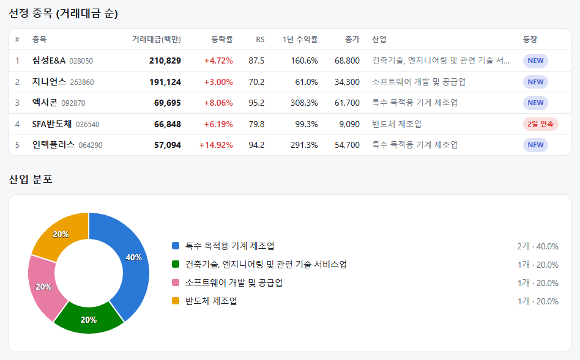
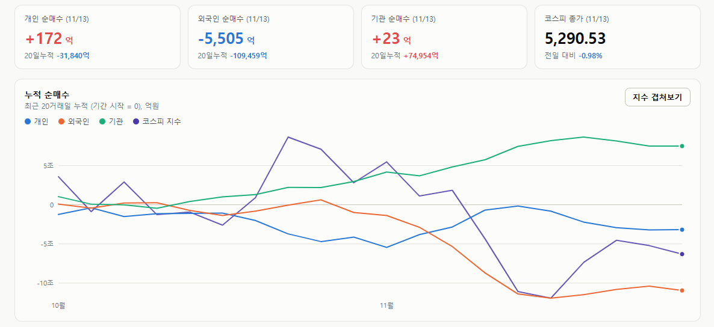
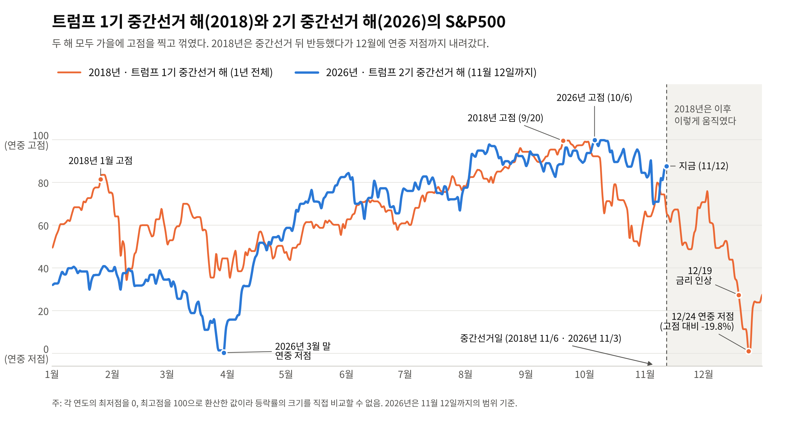
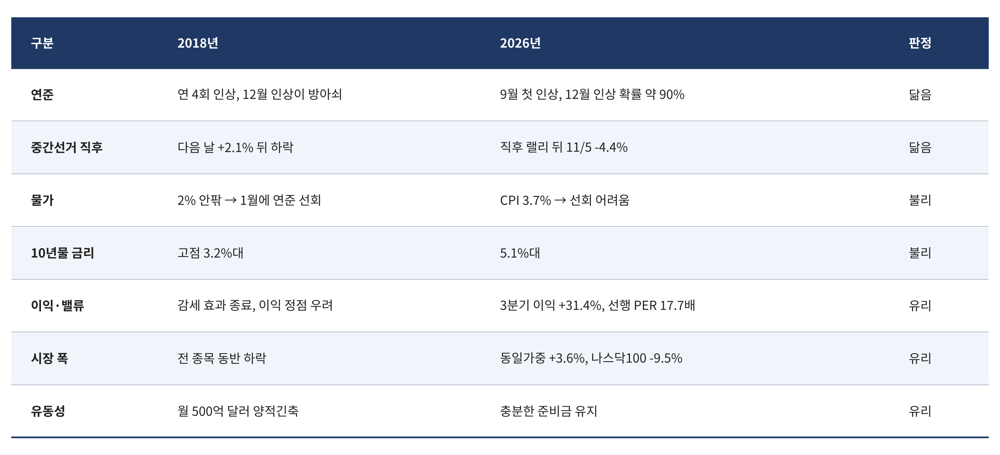

매일의 주도주 정리를 위해 기록합니다.
연속적으로 나온 종목들 또는 상승 후 조정받는 종목 위주로 리서치 해보시면 좋을 것 같습니다.

*오늘의 퀀트픽은 없습니다.
#주도섹터
금융(은행), 소프트웨어 및 운송
주요 업종 및 종목: 은행(+3.95%), 창업투자(+3.35%), 해운사(+3.06%), 무선통신서비스(+3.00%), 증권(+2.74%), 신한지주(+5.65%), KB금융(+4.74%), 하나금융지주(+3.40%), 셀트리온(+2.15%).
분석: 시장 약세 속에서 은행(+3.95%), 증권(+2.74%) 등 금융 섹터가 강세를 보이며 지수 하락을 방어했습니다. 신한지주(+5.65%), KB금융(+4.74%) 등 대형 은행주가 상승을 주도했고, 셀트리온(+2.15%)과 창업투자, 무선통신서비스 등 방어적 성격의 업종도 견조한 흐름을 나타냈습니다.
#조정섹터
반도체 및 주요 산업재 전반
주요 업종 및 종목: 유틸리티(-8.15%), 생명과학도구및서비스(-3.75%), 양방향미디어와서비스(-3.24%), 인터넷과카탈로그소매(-2.61%), 우주항공과국방(-2.38%), 반도체와반도체장비(-1.73%), SK스퀘어(-3.67%), 삼성전기(-3.50%), SK하이닉스(-3.03%), 삼성바이오로직스(-2.62%), 삼성전자(-0.96%).
분석: 전기유틸리티(-8.15%)의 하락폭이 가장 컸으며, 생명과학도구(-3.75%), 양방향미디어(-3.24%) 등 성장주 섹터도 조정을 받았습니다. 시가총액 상위주인 삼성전자(-0.96%), SK하이닉스(-3.03%), 삼성바이오로직스(-2.62%)에 매물 부담이 집중되며 코스피 하락을 견인했습니다
#수급동향

코스피 지수는 -0.98% 하락한 5,290.53으로 마감하며 5,300선을 내어주었습니다. 반면 코스닥 지수는 +0.45% 상승한 699.66을 기록하며 700선 회복을 시도하는 차별화된 흐름을 보였습니다.
유가증권시장에서 외국인 투자자는 5,505억 원(20일 누적 -10조 9,459억 원)을 순매도하며 매도 기조로 전환했습니다. 기관 투자자는 23억 원, 개인 투자자는 172억 원을 각각 소폭 순매수하며 짙은 관망세를 나타냈습니다.
상승 종목은 454개, 하락 종목은 420개로 팽팽한 흐름을 보였습니다. 자동차, 2차전지, 반도체 일부 등 주요 산업재가 하락을 주도한 반면, 금융, 소프트웨어, 운송 등은 선별적으로 상승하며 증시 내 순환매 양상이 전개되었습니다.
트럼프 1기 중간선거 해의 12월, 2기 중간선거 해에도 올까
2018년은 트럼프 1기의 중간선거 해였고, 올해는 트럼프 2기의 중간선거 해입니다. 같은 대통령, 같은 선거 주기, 금리를 올리는 연준, 10월의 고점과 11월의 반등 시도까지 겹칩니다. 2018년은 그 반등이 12월에 무너졌던 해입니다.

① 중간선거 해의 계절성, 그리고 2018년이 간 길
중간선거 해에는 잘 알려진 계절성이 있습니다. 선거 전까지는 정책 불확실성으로 부진하고, 선거가 끝나면 오른다는 것입니다. 1950년 이후 중간선거 뒤 6개월과 12개월 수익률은 한 번도 마이너스가 아니었습니다.
트럼프 1기의 2018년은 이 계절성을 가장 험한 길로 따라간 해입니다. 중간선거(11월 6일) 다음 날 S&P500은 +2.1% 올랐지만, 그 뒤 12월 24일까지 선거일 종가 대비 약 -15% 내려갔습니다. 10월 -6.9%, 11월 +1.8%, 12월 -9.2%. 12월 수익률로는 1931년 이후 최악이었습니다. 그런데 선거 6개월 뒤에는 선거일보다 약 6% 위, 12개월 뒤에는 약 12% 위에 있었습니다. 계절성은 틀리지 않았습니다. 다만 그 사이에 -15%의 구간이 있었습니다.
차트로 보면 올해 파란 선은 가을까지 2018년과 비슷하게 움직였고, 지금은 11월 초 하락을 대부분 되돌린 자리에 있습니다. 2018년의 11월 중순과 같은 위치입니다.
② 닮은 점 — 연준과 선거
긴축 중인 연준 ㅡ 2018년 연준은 네 차례 금리를 올렸고, 12월 19일의 네 번째 인상이 급락의 방아쇠였습니다. S&P500은 9월 고점 대비 -19.8%인 12월 24일에야 멈췄습니다. 올해는 연준이 9월에 3년여 만의 첫 인상을 했고, 12월 추가 인상 확률은 약 90%입니다. 12월 9일 FOMC가 같은 자리에 있습니다.
중간선거 직후 랠리의 실패 ㅡ 2018년에도 선거 다음 날 올랐다가 꺾였습니다. 올해는 선거 직후 랠리가 하루 만에 11월 5일의 -4.4%로 뒤집혔습니다.
50일선 아래의 반등 ㅡ 현재 S&P500은 11월 6일까지 4주 연속 내렸고, 반등했지만 어제 종가 7,592는 50일선(약 7,673) 아래입니다.
③ 다른 점 — 불리한 둘, 유리한 셋
불리한 것은 물가와 금리입니다.
2018년에는 물가가 2% 안팎이라 파월 의장이 2019년 1월 초에 바로 돌아설 수 있었고, 그해 S&P500은 +28.9% 올랐습니다. 지금은 CPI가 3.7%이고 50bp 인상까지 거론됩니다. 시장이 무너져도 연준이 받쳐주기 어렵습니다.
금리 수준도 다릅니다. 2018년 10년물 고점은 3.2%대였고 지금은 5.1%대입니다. 주식의 이익수익률(선행 PER 17.7배의 역수 5.65%)과 10년물의 차이는 약 0.5%p뿐입니다.
유리한 것은 이익, 시장 폭, 유동성입니다.
3분기 이익 증가율은 31.4%이고 선행 PER은 5년 평균(19.8배)보다 낮은 17.7배입니다. 2018년은 감세 효과가 끝나 이익이 정점을 지났다는 우려가 컸습니다.
시장 폭도 다릅니다. 2018년은 전 종목이 함께 무너졌는데, 지금은 최근 한 달 동일가중 지수가 +3.6% 오르는 동안 나스닥100이 -9.5% 빠졌고, 50일선 위 종목 비중은 10월 초 20%에서 69%로 늘었습니다. 이번 주 엔비디아 -12%, 반도체 ETF +8%도 같은 그림입니다. 2018년에는 월 500억 달러 양적긴축이 진행 중이었지만 지금은 아닙니다.

정리하면 지금의 조정은 2018년 같은 전면 붕괴보다 AI 쏠림의 해소에 가깝습니다. 다만 2018년에는 있던 안전판, "시장이 빠지면 연준이 돌아선다"는 장치가 지금은 없습니다.
④ 한국은 2018년에 어땠나
10월 14일 글의 표를 다시 보면, 2018년 코스피는 10월 -12.1%, 11월 +2.9%, 12월 -2.1%였습니다. 미국이 12월에 -9.2% 내릴 때 한국은 -2.1%에 그쳤습니다. 10월에 먼저, 더 크게 빠졌기 때문입니다. 올해도 순서는 같습니다. 2018년이 한국에 주는 뜻은 "12월에 또 무너진다"가 아니라 먼저 맞은 시장은 두 번째 충격에서 덜 맞았다는 것입니다.
기억해야할 것은 트럼프 1기 중간선거 해 계절성이 6개월 뒤 결국 맞았지만 그 과정이 평탄하지 않았다는 것입니다. 올해는 이익과 시장 폭은 그때보다 좋고, 물가와 금리는 그때보다 나쁩니다.
시장이 순탄하게 올라가기 위해서는
S&P500의 50일선 회복, 10년물의 금리의 하락, 11월 17일 엔비디아 컨센서스 상향의 조건들이 필요하겠습니다.
이번 한주도 수고하셨습니다.
즐거운 주말 보내세요!